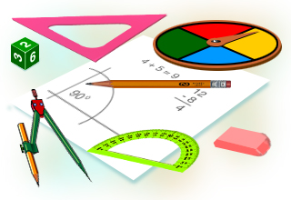

Начало
Описание
Вписана окръжност
Описана окръжност
Задачи
Урок за Окръжности
Определения и основни свойства.
Вписана и описана оръжност за триъгълник.
За 8 клас

В този урок ще разгледаме:
Определение на Евклид
Определение Аполоний от Перге
Термини свързани с окръжности
Свойства
Теореми
Формули
Описана окръжност около триъгълник
Вписана окръжност в триъгълник
Задачи
Изгoтвила:
Ивалина Николова
Факултетен номер:
71502
Специалност:
Информационни Системи
Курс:
4